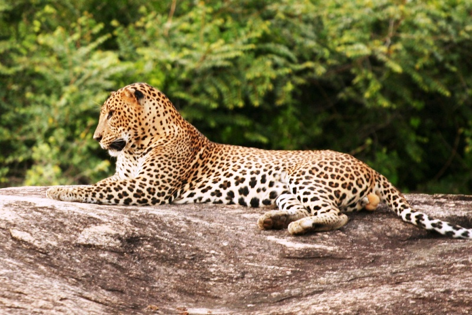

quick summary
| Wild park | Animal to be seen | facts about it | Sinharaja forest |  leopard | The Leopard (Panthera pardus, Linnaeus, 1758) is the most secretive and elusive of
the large carnivores, and also the shrewdest. |
horton park | Sambar Deer | The Sri Lankan sambar or Indian sambar (Rusa unicolor unicolor), also known as ගෝනා (gōṇā) in Sinhala, is a subspecies of the sambar that lives
in India and Sri Lanka. British explorers and planters referred to it, erroneously, as an elk,[2] leading to place names such as Elk Plain. |
|---|---|---|
| Minneriya National Park |  Elephants Elephants |
The Sri Lankan subspecies is the largest and also the darkest of the Asian elephants, with patches of depigmentation—areas with no skin color—on its ears, face, trunk and belly. Once found throughout the tear-shaped island at the bottom of India’s southern tip, these elephants are now being pushed into smaller areas as development activities clear forests and disrupt their ancient migratory routes. |